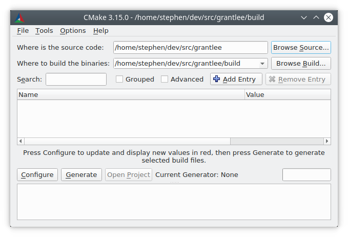
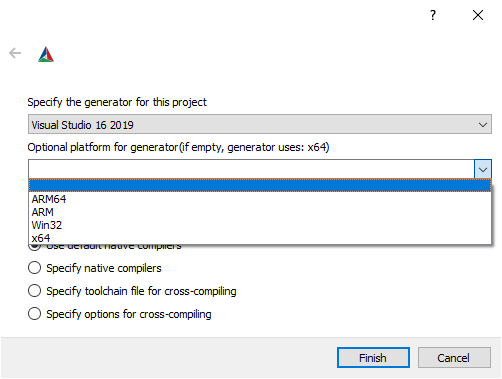
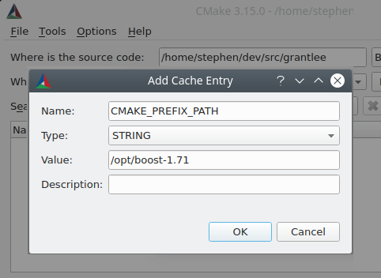

用户交互指南¶
引言¶
当软件包为基于CMake的构建系统提供了软件的源代码时，软件的消费者需要运行一个CMake用户交互工具来构建它。
行为良好的基于CMake的构建系统不会在源目录中创建任何输出，所以通常情况下，用户执行一个源外构建并在那里执行构建。首先，必须指示CMake生成一个合适的构建系统，然后用户调用构建工具来处理生成的构建系统。生成的构建系统是特定于用来生成它的机器的，并且是不可再分布的。提供的源软件包的每个消费者都需要使用CMake来生成特定于他们系统的构建系统。
生成的构建系统通常应该被视为只读的。作为主要构件的CMake文件应该完全指定构建系统，并且应该没有理由在IDE中手动填充属性，例如在生成构建系统之后。CMake会定期重写生成的构建系统，因此用户的修改会被覆盖。
通过提供CMake文件，本手册中描述的功能和用户界面可用于所有基于CMake的构建系统。
当处理提供的CMake文件时，CMake工具可能会向用户报告错误，比如报告编译器不受支持，或者编译器不支持必需的编译选项，或者无法找到依赖项。这些错误必须由用户通过选择不同的编译器、安装依赖或指示CMake在哪里找到它们来解决。
cmake命令行工具¶
cmake(1)的一个简单但典型的用法是创建一个build目录并在那里调用cmake：
$ cd some_software-1.4.2
$ mkdir build
$ cd build
$ cmake .. -DCMAKE_INSTALL_PREFIX=/opt/the/prefix
$ cmake --build .
$ cmake --build . --target install
建议在到源的单独目录中构建，因为这样可以保持源目录的原始状态，允许使用多个工具链构建单个源，并允许通过简单地删除构建目录轻松地清除构建工件。
CMake工具可能会报告针对软件提供者的警告，而不是针对软件消费者的警告。此类警告以“此警告针对项目开发人员”结尾。用户可以通过向cmake(1)传递-Wno-dev标志来禁用此类警告。
cmake-gui工具¶
更习惯GUI界面的用户可以使用cmake-gui(1)工具来调用CMake并生成构建系统。
必须首先填充源目录和二进制目录。总是建议为源文件和构建文件使用不同的目录。
生成一个构建系统¶
有一些用户界面工具可以用来从CMake文件生成构建系统。ccmake(1)和cmake-gui(1)工具通过设置各种必要的选项指导用户。可以调用cmake(1)工具来在命令行上指定选项。本手册描述了可以使用任何用户界面工具设置的选项，尽管每种工具设置选项的方式不同。
命令行环境¶
当使用命令行构建系统(如Makefiles或Ninja)调用cmake(1)时，有必要使用正确的构建环境以确保构建工具可用。CMake必须能够根据需要找到合适的build tool、编译器、链接器和其他必要工具。
在Linux系统上，适当的工具通常在系统范围内的位置提供，并且可以通过系统包管理器随时安装。用户提供的或安装在非默认位置的其他工具链也可以使用。
在交叉编译时，一些平台可能需要设置环境变量，或者可能提供设置环境的脚本。
Visual Studio提供了多个命令提示符和vcvarsall.bat脚本，用于为命令行构建系统设置正确的环境。虽然在使用Visual Studio生成器时并不一定需要使用相应的命令行环境，但这样做无坏处。
当使用Xcode时，可以安装多个Xcode版本。使用哪种方法可以有很多不同的选择，但最常见的方法是：
在Xcode IDE的首选项中设置默认版本。
通过
xcode-select命令行工具设置默认版本。在运行CMake和构建工具时，通过设置
DEVELOPER_DIR环境变量来覆盖默认版本。
为了方便起见，cmake-gui(1)提供了一个环境变量编辑器。
命令行-G选项¶
CMake根据平台默认选择一个生成器。通常，默认生成器足以允许用户继续构建软件。
用户可以使用-G选项覆盖默认生成器：
$ cmake .. -G Ninja
cmake --help的输出包括一个可供用户选择的生成器列表。注意，生成器名称是区分大小写的。
在类Unix系统（包括Mac OS X）上，默认情况下使用Unix Makefiles生成器。该生成器的一个变体也可以在各种环境的Windows上使用，比如NMake Makefiles和MinGW Makefiles生成器。这些生成器生成一个Makefile变体，可以用make、gmake、nmake或类似工具执行。有关目标环境和工具的更多信息，请参见单个生成器文档。
Ninja生成器适用于所有主要平台。ninja是一个用法类似于make的构建工具，但侧重于性能和效率。
在Windows平台上，可以使用cmake(1)为Visual Studio IDE生成解决方案。Visual Studio版本可以通过IDE的产品名来指定，其中包含一个四位数字的年份。别名也可以用来表示Visual Studio版本，比如两个数字对应于VisualC++编译器的产品版本，或者两者的组合：
$ cmake .. -G "Visual Studio 2019"
$ cmake .. -G "Visual Studio 16"
$ cmake .. -G "Visual Studio 16 2019"
Visual Studio生成器可以针对不同的体系结构。可以使用-A选项指定目标架构：
cmake .. -G "Visual Studio 2019" -A x64
cmake .. -G "Visual Studio 16" -A ARM
cmake .. -G "Visual Studio 16 2019" -A ARM64
在苹果平台上，Xcode生成器可能被用来为Xcode IDE生成项目文件。
一些IDE，如KDevelop4, QtCreator和CLion，对基于CMake的构建系统有本地支持。这些IDE提供了选择要使用的底层生成器的用户界面，通常是在Makefile或基于Ninja的生成器之间进行选择。
请注意，在第一次调用CMake之后，不可能再使用-G更改生成器。要更改生成器，必须先删除生成目录，并且必须从头开始生成。
当生成Visual Studio项目和解决方案文件时，在最初运行cmake(1)时，可以使用其他几个选项。
Visual Studio工具集可以通过cmake -T选项指定：
$ # Build with the clang-cl toolset
$ cmake.exe .. -G "Visual Studio 16 2019" -A x64 -T ClangCL
$ # Build targeting Windows XP
$ cmake.exe .. -G "Visual Studio 16 2019" -A x64 -T v120_xp
虽然-A选项指定_target_体系结构，但-T选项可用于指定所使用的工具链的详细信息。例如，-Thost=x64可用于选择64位版本的主机工具。下面演示如何使用64位工具，以及如何构建64位目标体系结构:
$ cmake .. -G "Visual Studio 16 2019" -A x64 -Thost=x64
在cmake-gui选择生成器¶
“Configure”按钮会触发一个新的对话框来选择要使用的CMake生成器。

命令行中可用的所有生成器在cmake-gui(1)中也可用。

当选择生成器时，可以使用更多选项来设置要生成的体系结构。
设置构建变量¶
软件项目在调用CMake时通常需要在命令行上设置变量。下表列出了一些最常用的CMake变量：
变量 |
意义 |
|---|---|
|
|
额外的CMake模块搜索路径 |
|
构建配置，如 |
|
使用 |
|
包含交叉编译数据的文件，例如 |
|
是否为未指定类型的 |
|
使用基于clang的工具生成一个 |
其他特定于项目的变量可以用于控制构建，例如启用或禁用项目的组件。
对于这些变量如何在不同的构建系统之间命名，CMake没有约定，除了前缀为CMAKE_的变量通常引用CMake本身提供的选项，不应该在第三方选项中使用，第三方选项应该使用自己的前缀。cmake-gui(1)工具可以显示由前缀定义的组中的选项，因此第三方确保使用自一致的前缀是有意义的。
在命令行设置变量¶
CMake变量可以在创建初始构建时在命令行中设置：
$ mkdir build
$ cd build
$ cmake .. -G Ninja -DCMAKE_BUILD_TYPE=Debug
或者稍后调用cmake(1)：
$ cd build
$ cmake . -DCMAKE_BUILD_TYPE=Debug
$ cd build
$ cmake . -UMyPackage_DIR
最初在命令行上创建的CMake构建系统可以使用cmake-gui(1)进行修改，反之亦然。
在cmake-gui设置变量¶
变量可以在cmake-gui中使用“Add Entry”按钮进行设置。这会触发一个新的对话框来设置变量的值。
cmake-gui(1)用户界面的主视图可以用来编辑现有的变量。
CMake缓存¶
当CMake执行时，它需要找到编译器、工具和依赖项的位置。它还需要能够一致地重新生成构建系统，以使用相同的编译/链接标志和依赖项路径。用户还需要配置这些参数，因为它们是特定于用户系统的路径和选项。
当它第一次被执行时，CMake会在构建目录中生成一个CMakeCache.txt文件，其中包含此类工件的键值对。用户可以通过运行cmake-gui(1)或ccmake(1)工具查看或编辑缓存文件。这些工具提供了一个交互界面，用于重新配置所提供的软件并重新生成构建系统，这是在编辑缓存值之后所需要的。每个缓存条目可能都有一个相关的简短帮助文本，显示在用户界面工具中。
缓存项也可以有一种类型来表示它应该如何在用户界面中显示。例如，BOOL类型的缓存条目可以通过用户界面中的复选框进行编辑，STRING可以在文本字段中进行编辑，而与STRING类似的FILEPATH也应该提供一种使用文件对话框定位文件系统路径的方法。一个STRING类型的条目可以提供一个允许值的限制列表，然后在cmake-gui(1)用户界面的下拉菜单中提供(参见STRINGS缓存属性)。
软件包附带的CMake文件也可以使用option()命令定义布尔切换选项。该命令创建一个缓存条目，该条目具有帮助文本和默认值。这类缓存条目通常特定于所提供的软件，并影响构建的配置，例如是否构建测试和示例，是否启用异常构建等。
预设¶
CMake理解一个文件，CMakePresets.json，以及它的用户特定对等体CMakeUserPresets.json，用于保存常用配置设置的预设。这些预设可以设置构建目录、生成器、缓存变量、环境变量和其他命令行选项。所有这些选项都可以被用户覆盖。CMakePresets.json格式的详细信息在cmake-presets(7)手册中列出。
在命令行使用预设¶
当使用cmake(1)命令行工具时，可以使用--preset选项来调用预设。如果指定了--preset，则不需要生成器和生成目录，但可以指定重写它们。例如，如果你有以下CMakePresets.json文件：
{
"version": 1,
"configurePresets": [
{
"name": "ninja-release",
"binaryDir": "${sourceDir}/build/${presetName}",
"generator": "Ninja",
"cacheVariables": {
"CMAKE_BUILD_TYPE": "Release"
}
}
]
}
然后运行以下命令:
cmake -S /path/to/source --preset=ninja-release
这将使用Ninja生成器在/path/to/source/build/ninja-release中生成一个构建目录，并将CMAKE_BUILD_TYPE设置为Release。
如果你想查看可用预设的列表，你可以运行:
cmake -S /path/to/source --list-presets
这将列出/path/to/source/CMakePresets.json及/path/to/source/CMakeUsersPresets.json中可用的预设，而不是生成构建树。
在cmake-gui使用预设¶
如果一个项目有可用的预设，包括CMakePresets.json或CMakeUserPresets.json，预设列表将出现在 cmake-gui(1)的下拉菜单中，在源目录和二进制目录之间。选择预置会设置二进制目录、生成器、环境变量和缓存变量，但是在选择预置之后，可以覆盖所有这些选项。
调用构建系统¶
生成构建系统之后，可以通过调用特定的构建工具来构建软件。在IDE生成器的情况下，这可能涉及将生成的项目文件加载到IDE中以调用构建。
CMake知道调用构建所需的特定构建工具，所以一般来说，要在生成后从命令行构建构建系统或项目，可以在构建目录中调用以下命令：
$ cmake --build .
--build标志为cmake(1)工具启用了一种特定的操作模式。它调用与生成器相关联的CMAKE_MAKE_PROGRAM命令，或者调用用户配置的构建工具。
--build模式还接受参数--target来指定要构建的特定目标，例如特定的库、可执行文件或自定义目标，或者特定的特殊目标，如install：
$ cmake --build . --target myexe
在多配置生成器的情况下，--build模式还接受--config参数来指定要构建的特定配置：
$ cmake --build . --target myexe --config Release
如果生成器在使用CMAKE_BUILD_TYPE变量调用cmake时生成特定于配置的构建系统，则--config选项无效。
一些构建系统省略了构建期间调用的命令行细节。--verbose标志可用于显示这些命令行：
$ cmake --build . --target myexe --verbose
--build模式还可以通过在--之后列出特定的命令行选项，将它们传递给底层的构建工具。这对于为构建工具指定选项非常有用，例如在任务失败后继续构建，当CMake不提供高级用户界面时。
对于所有生成器，在调用CMake之后都可以运行底层构建工具。例如，make可能在使用Unix Makefiles生成器生成后执行，以调用构建，或者ninja在使用Ninja生成器生成后执行。IDE构建系统通常为构建项目提供命令行工具，该项目也可以被调用。
选择一个目标¶
CMake文件中描述的每个可执行文件和库都是一个构建目标，构建系统可以描述定制的目标，要么供内部使用，要么供用户使用，例如用于创建文档。
CMake为提供CMake文件的所有构建系统提供了一些内置目标。
allMakefile和Ninja生成器使用的默认目标。构建构建系统中的所有目标，除了那些被它们的EXCLUDE_FROM_ALL目标属性或EXCLUDE_FROM_ALL目录属性排除的目标。名称ALL_BUILD用于Xcode和Visual Studio生成器。help列出可用于生成的目标。当使用
Unix Makefiles或Ninja生成器时，可以使用此目标，并且确切的输出是特定于工具的。clean删除已构建的目标文件和其他输出文件。基于
Makefile的生成器为每个目录创建一个clean目标，以便可以清理单个目录。Ninja工具提供了自己的颗粒-t clean系统。test运行测试。只有在CMake文件提供基于CTest的测试时，此目标才自动可用。请参见运行测试。
installpackage创建一个二进制包。这个目标只有在CMake文件提供基于CPack的包时才自动可用。
package_source创建源包。这个目标只有在CMake文件提供基于CPack的包时才自动可用。
对于基于Makefile的系统，提供了二进制构建目标的/fast变体。/fast变体用于构建指定的目标，而不考虑其依赖关系。不检查依赖项，如果过期也不会重新生成依赖项。Ninja生成器在检查依赖项时速度足够快，以确保没有为该生成器提供此类目标。
基于Makefile的系统还提供构建目标来预处理、组装和编译特定目录中的单个文件。
$ make foo.cpp.i
$ make foo.cpp.s
$ make foo.cpp.o
文件扩展名内置到目标名称中，因为可能存在另一个具有相同名称但扩展名不同的文件。但是，还提供了没有文件扩展名的构建目标。
$ make foo.i
$ make foo.s
$ make foo.o
在包含foo.c和foo.cpp的构建系统中，构建foo.i将预处理这两个文件。
指定一个构建程序¶
--build模式调用的程序由CMAKE_MAKE_PROGRAM变量决定。对于大多数生成器，不需要配置特定的程序。
生成器 |
默认构建程序 |
其他替代 |
|---|---|---|
XCode |
|
|
Unix Makefiles |
|
|
NMake Makefiles |
|
|
NMake Makefiles JOM |
|
|
MinGW Makefiles |
|
|
MSYS Makefiles |
|
|
Ninja |
|
|
Visual Studio |
|
|
Watcom WMake |
|
jom工具能够读取NMake风格的makefile并并行构建，而nmake工具总是串行构建。在使用NMake Makefiles生成器生成后，用户可以运行jom而不是nmake。在使用NMake Makefiles生成器时，如果CMAKE_MAKE_PROGRAM被设置为jom，--build模式也会使用jom，为了方便起见，提供了NMake Makefiles JOM生成器以正常的方式找到jom并将其用作CMAKE_MAKE_PROGRAM。为了完整起见，nmake是一个替代工具，它可以处理NMake Makefiles JOM生成器的输出，但这样做将是一种悲观。
软件安装¶
可以在CMake缓存中设置CMAKE_INSTALL_PREFIX变量，以指定在何处安装所提供的软件。如果提供的软件具有使用install()命令指定的安装规则，它们将把工件安装到该前缀中。在Windows上，默认安装位置对应于ProgramFiles系统目录，该目录可能是特定于体系结构的。在Unix主机上，/usr/local是默认的安装位置。
CMAKE_INSTALL_PREFIX变量总是指向目标文件系统上的安装前缀。
在交叉编译或打包的场景中，sysroot是只读的，或者sysroot应该保持原始状态，可以将CMAKE_STAGING_PREFIX变量设置为实际安装文件的位置。
这些命令：
$ cmake .. -DCMAKE_INSTALL_PREFIX=/usr/local \
-DCMAKE_SYSROOT=$HOME/root \
-DCMAKE_STAGING_PREFIX=/tmp/package
$ cmake --build .
$ cmake --build . --target install
导致文件被安装到机器的/tmp/package/lib/libfoo.so等路径下。机器上的/usr/local位置不受影响。
一些提供的软件可能会指定uninstall规则，但CMake本身默认不生成这样的规则。
运行测试¶
ctest(1)工具随CMake发行版一起提供，用于执行所提供的测试并报告结果。尽管提供了test构建目标以运行所有可用的测试，但ctest(1)工具也允许对运行哪些测试、如何运行它们以及如何报告结果进行细粒度控制。在构建目录中执行ctest(1)相当于运行test目标：
$ ctest
可以传递正则表达式来只运行与该表达式匹配的测试。只运行以Qt命名的测试：
$ ctest -R Qt
正则表达式也可以排除测试。只运行名称中没有Qt的测试：
$ ctest -E Qt
$ ctest -R Qt -j8
也可以设置环境变量CTEST_PARALLEL_LEVEL，以避免需要传递-j。
默认情况下，ctest(1)不打印测试的输出。命令行参数-V（或--verbose）启用verbose模式打印所有测试的输出。--output-on-failure选项仅打印失败测试的测试输出。环境变量CTEST_OUTPUT_ON_FAILURE可以设置为1，作为将--output-on-failure选项传递给ctest(1)的替代方法。